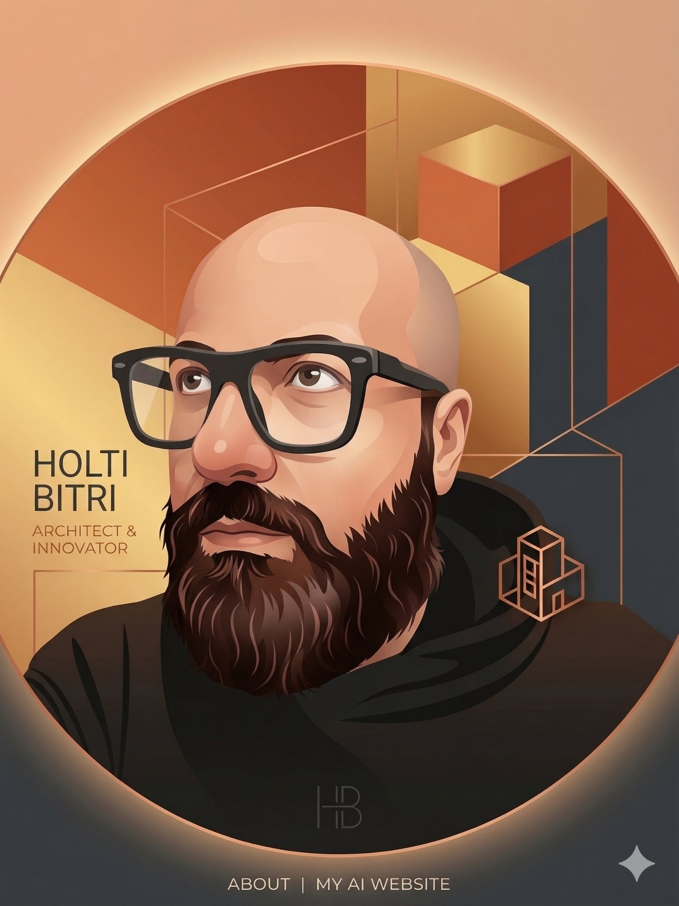

Innovation Director · Cloud Architect · Microsoft Ecosystem
Building bridges between technology vision and business impact. 15+ years at the intersection of architecture, innovation, and delivery.
I'm an Innovation & Cloud Architect Director with 15+ years in the Microsoft ecosystem — evolved from enterprise .NET developer to leading cross-functional innovation areas spanning Power Platform, Azure, and custom development.
Today I drive digital transformation initiatives for enterprise clients, overseeing AI-powered products including AI4Teams, AI4Align, and AI4Orchestration. My work connects architecture, strategy, and delivery.
Enterprise clients I've worked with include PwC, Medtronic, MPS, and Nexive — across banking, healthcare, logistics, and consulting.

A fully local, privacy-first AI pipeline that processes video recordings (Teams, Zoom, Webex) to produce transcription, speaker identification, and structured meeting summaries — CPU only, zero cloud dependency.
AI-powered Microsoft products designed to enhance team collaboration, alignment, and productivity within the Microsoft 365 ecosystem.
Intelligent orchestration platform on the Microsoft stack, enabling enterprise-grade workflow automation and AI-driven process management at scale.
Whether you're looking for a cloud architecture leader, an innovation director, or a Microsoft ecosystem expert — I'm always open to meaningful conversations about challenging problems and strategic opportunities.